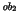
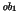

Definitions of the simulation rules for Object-Z were first given by Smith and Derrick [182] for a restricted subset of Object-Z where classes could not contain objects as state variables (which were unnecessary as the language was being combined with CSP).
Refinement in Object-Z is also briefly discussed by Smith in [179] and Duke et al in [76] in the context of behavioural compatibility. The central view of behavioural compatibility taken in [76] is the same notion that underlies refinement, i.e., an object  is compatible with an object  if can be replaced by without the substitution resulting in any detectable difference in behaviour. However, the blocking model defined in [76] differentiates between output messages controlled by the object and input messages which are under the control of the environment. It is also concerned with object substitutability whereas refinement is concerned with the behaviour and substitutability of the whole specification. Refinement in Object-Z as we have discussed here takes a simpler view in that operations are atomic and are under control of the environment irrespective of whether they contain input or output declarations.
Refinement methods have also been considered for a number of other object-oriented specification languages. In [27] a refinement methodology for OO action systems is presented, OO action systems being based upon the action systems formalism. Refinement for OO action systems is defined within the refinement calculus framework [14], and refinement is designed to preserve trace behaviour. There has also been work on refinement for object-oriented languages based around TLA [139] which includes, for example, DisCo [128] and TLO [47].
Work that is relevant to subtyping [7] in Object-Z includes that of [197,149,53]. Ideas on how to reconcile refinement with subtyping where new operations can be added are contained in [89,204] which looks at these questions in the context of CSP and its failures-divergences semantics.